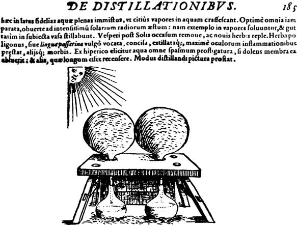
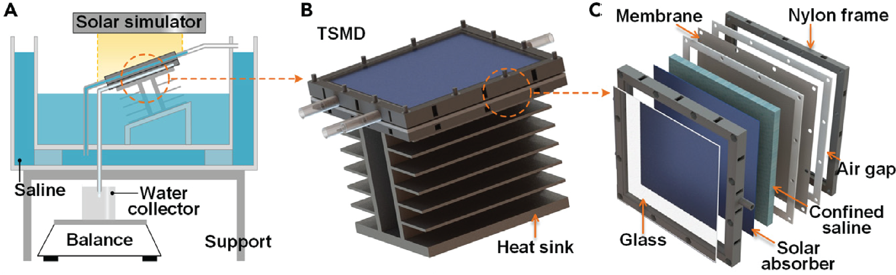

Recently, MIT publicists announced a ‘breakthrough’ in desalination in an MIT News article entitled “Desalination system could produce freshwater that is cheaper than tap water.” This article was picked up by the popular press and amplified by several outlets, including Business Insider (who changed the verb from “could” to “can”) and the World Economic Forum (who referred to the system as “new”). It could be transformational if such a bold assertion stands up to hard-headed techno-economic analysis. But the operative word in that title is “could”. Here, I’d like to address the question, “Can it?”
It’s of particular personal interest because one of the co-authors, Evelyn Wang, is currently leading my former agency, ARPA-E.
This critical analysis is necessary because, unfortunately, there is almost always a gap between what academics assert about cost and what is economically practical in the marketplace. I’ve experienced this first hand: During my ARPA-E residency, I reviewed countless analyses by academics in support of low-cost biofuels, generally resulting in a number that was less than the then-current price of gasoline. The primary device to reduce costs was something I routinely referred to as “leaving shit out,” in other words, the analyses omitted significant costs (such as transportation of raw materials to a processing center) in the calculation. This tendency is exacerbated by attention-starved academic scientists who want to trumpet breakthroughs but lack direct exposure to the market. This causes them to conflate market price (generally published or at least publicly available) with the total cost of production (typically a closely held corporate secret). Even for those inside the corporate firewall, an accurate, quantitative comparison is nearly impossible for a very simple reason, the difference between price and cost is what drives capitalism: Profit. It’s not just simple math.
Suffice it to say that I’m skeptical but intrigued, even though it’s not a new story. It’s not even the first time MIT has announced a breakthrough regarding water 1 . It’s certainly not the first time that passive solar irradiation has been connected to desalination technologies—the review article here traces the idea back to the Old Testament and cites Renaissance scientists with nifty da Vinci-like schematics.

Anyway, let’s see if there’s anything new under the sun, 2 shall we? Here’s the apparatus design:

The description [thermohaline convection-enhanced solar multistage membrane distillation device (TSMD)] is a nearly unparseable technical mouthful, but the experimental design is elegant. Here’s the essence of how it works. The outer shell of the “still” is filled with salt water to pressure the system. This water then flows to the back of a black “solar absorber,” which heats the water—the key innovation is in replacing the paper wick used in previous designs with a “confined saline layer”, which is poorly described in the paper. I’m guessing it is contained by a vapor-permeable water-impermeable membrane a la Gore-Tex. Evaporation from the bottom of this confined saline layer transfers salt-free water to the next layer of the sandwich, where it heats the next layer to repeat the process. The system is operated at an angle to percolate the heated saltwater upward and collect the fresh water by gravity. In the meantime, heat-driven circulation of the saline keeps salt from accumulating, instead driving a concentrated salt solution out of the top of the device. As fresh water is collected from the bottom, salt water is added to maintain the pressure in the system.
The first red flag is in the abstract, where the authors claim “record high solar-to-water efficiencies of 322%-121% in the salinity range of 0-20 wt % under one-sun illumination.” The ranges are odd, and efficiencies greater than 100% signify an unusual definition of efficiency. Digging into the details, efficiencies greater than 100% are achieved by “recovering the latent heat released from vapor condensation”. The 100% efficiency yardstick is the thermodynamic limit of “single-stage” solar distillation (1.47 kg•m-2•h-1).
So the first question is, where does that value come from, and how does it compare, energy-wise, to other desalination approaches? It turns out that the comparison value does not relate to desalination at all. It is how much energy it takes to evaporate water at 20°C (68°F) under “one sun” illumination [1,000 W•m-2] 3 . [“One sun” is the total solar energy received at a flat sea-level surface on a cloudless day.] This value is for vaporization, not desalination, so heat recovery is possible from condensation. But how much of the energy of evaporation is related to the essential process: salt removal?
As I reported earlier 4 , the state-of-the-art seawater reverse osmosis plant in Carlsbad, California, uses 4.4 MWh of electric power to desalinate an acre-foot of water in a process that is roughly 25% of the theoretical maximum efficiency of salt removal based on thermodynamic principles. So, let’s normalize the values so that they can be compared. An acre-foot is 1,233 cubic meters of water (each cubic meter is roughly a metric ton or 1,000 kilograms), so Carlsbad produces water at 0.28 Wh per kg. For comparison, 100% efficient “single-stage solar distillation” works out to 680 Wh per kilogram. Broadly speaking, then, evaporation takes (a lot) more energy than salt removal.
Let’s compare apples to apples. Imagine two systems, one based on the MIT design and one that uses off-the-shelf solar panels to generate electric power to drive a pressure-based reverse osmosis system, starting from seawater. For visualization purposes, let’s assume that sunlight is harvested from a square meter, illuminated under “one sun,” and that we collect water for an hour. The question is, “Which setup will produce the most freshwater?” It’s not necessarily straightforward because of conversion losses and the funky definition of efficiency researchers adopt in the solar distillation field.
From the paper, the measured efficiency of the MIT setup vs. seawater (3.5% salinity) is 3.62 kg•m-2•h-1, so the answer for this alternative is 3.62. From the Carlsbad setup, let’s assume solar to AC is 20% efficient (25% panel, 80% inverter), so the total energy collected in an hour from a square meter under one sun is 200 Wh. Scratching on the back of my envelope, a conventional seawater reverse osmosis system would lead to 56.0 kg or about 15 times more fresh water per unit area under full sun. Sure, reality will be more complicated (for either setup) due to many factors, but that’s a pretty steep hill to climb.
But what about the cost calculation? The MIT system is passive with no moving parts so the passive approach could be cheap even at lower outputs. This is what the press report cites:
The researchers estimate that if the system is scaled up to the size of a small suitcase, it could produce about 4 to 6 liters of drinking water per hour and last several years before requiring replacement parts. At this scale and performance, the system could produce drinking water at a rate and price that is cheaper than tap water.
“For the first time, it is possible for water, produced by sunlight, to be even cheaper than tap water,” says Lenan Zhang, a research scientist in MIT’s Device Research Laboratory.
Note the verbs “estimate” and “could”. The question, now, is, “Where does the cost estimate come from?” It’s reported in the paper, dutifully supported by equations buried in the supplemental materials. But instead of subjecting you to the math, let’s look at the assumptions:
-
The operational lifetime of a passive operation for seawater desalination under intermittent solar can be extrapolated from the continuous operation on lab-made salt water.
-
In practice, this means accepting that a 180-hour test with a 20% salt solution (what the authors erroneously refer to as “20% seawater”) in the lab is the same as 230 days of operation outside on seawater.
-
From the curves presented in the paper, it looks like it takes 20-30 minutes for the “still” to reach temperature even under full direct sunlight.
-
The entire system is enclosed, meaning that the saltwater reservoir retains the heat from the system during operation. Still, it is not insulated from the environment, meaning heat can also be lost to the environment.
-
-
The “levelized cost of water” is the lifetime cost of the TSMD layers (only) divided by the volume produced per unit of energy under continuous operation.
-
Each layer lasts ten cycles.
-
The equipment cost is $12 per square meter per layer (derived from an average reported in the academic literature).
-
A technology proven in a 10 cm x 10 cm device with mass and heat transfer will extrapolate linearly to larger devices.
-
-
Implied assumptions:
-
Production (in liters per kilowatt hour) is proportional to light intensity at all intensities.
-
Salt accumulation is the only failure mode in seawater desalination.
-
Nylon 7500, glass, stainless steel, and Gore-Tex (presumably) will last six years under continuous exposure to direct sunlight and seawater.
-
All of these assumptions are unsubstantiated, and errors in any assumption would increase costs or decrease lifetime, rendering the “cheaper than tap water” assertion nothing more than hype. We can dig further into the substance: Based on the analysis reported in Table S2, the main cost-reduction factor is the projected lifetime of the apparatus, which is much longer than other passive solar stills . The authors admit this limitation, stating (in Supplementary Note S3): “Since previous studies typically show continuous test with around ~hour, it is difficult to extract useful lifetime data.” I’d rephrase it to say that useful lifetime data cannot be extrapolated, period! Granted, the paper did not extend its study through system failure, so the lifetime may be underestimated.
I particularly doubt that increasing the size of the equipment to the “size of a suitcase” would show scaleable results because critical failures in scaling up chemical engineering processes usually involve both heat and mass transfer. Heat and mass transfer us the basis of the entire technology!
I could continue this thread, and perhaps I will, but at the moment, there’s a lot of “leaving shit out” that’s going on in this very simplistic techno-economic analysis. The approach may, indeed, reduce the cost of desalination equipment with a tradeoff with desalination productivity . Still, the tradeoff has to be made in the marketplace, not with some half-baked academic estimate. I think the answer to the lead-in question, “Can a desalination system produce freshwater that is cheaper than tap water?, is “Not likely.”
I’m not ready to throw the baby out with the bath water here, which is why this is “Part 1”. The highest concentrations of salt reported (20%) are substantially higher than the brine effluent from a seawater reverse osmosis process (7%), so it may be worthwhile adding a TSMD device to the back end of a desalination plant to generate more water and to treat the effluent. I’m going to explore this possibility next time.
A search of the MIT News website revealed 195 articles discussing desalination, including a collaboration with King Fahd University of Petroleum and Minerals on water that would’ve ended eight years ago. Other breakthroughs include the formation of NONA Technologies to use Ion Concentration Polarization to reduce energy costs and VIA Separations to use graphene membranes. MIT researchers have also looked at technologies like electrodialysis reversal for use in rural India and shock electrodialysis , alongside technologically more mature solutions like PV-powered RO systems for use in rural Mexico.
Ecclesiastes 1:9 is an appropriate reference here: “What has been will be again, what has been done will be done again; there is nothing new under the sun.”